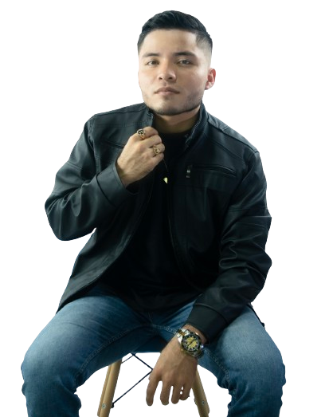

Inicio
Productos
Contacto
Soporte
¡Y Sírvase Otro Compadre!


BIOGRAFIA
Freylen Rodolfo Ceballes Paloma nació el 10 de mayo del año 2004 en el hospital central del municipio de La Montañita, Caquetá - Colombia. Su infancia transcurrió en la finca de sus padres en una vereda llamada Yumal Alto en zona rural del municipio de Milán, Caquetá - Colombia. Desde su niñez sintió una gran atracción por la música y el canto. Su primaria la cursó en la escualita de su vereda en donde no desaprovechaba las actividades realizadas para mostrar sus habilidades en el canto. Terminada su primaria, tuvo que irse a vivir a la ciudad de Florencia, Caquetá junto a su hermana mayor y sus abuelos en donde empezaría sus estudios de secundaria en el Colegio Jorge Eliécer Gaitán. A sus 16 años se graduó siempre teniendo su amor a la música. Actualmente es estudiante de la Universidad de la Amazonia en el programa de Ingeniería de Sistemas, y a la vez dedica parte de su vida a la música, es cantautor de música popular y gracias a eso a conocido ya varias partes de su departamento y su país.
MÚSICA